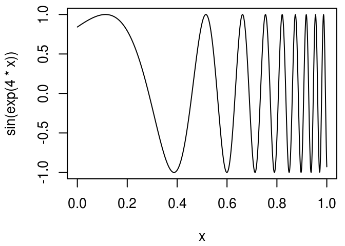

Expressions
In non-standard evaluation, you learned the basics of accessing and evaluating the expressions underlying computation in R. In this chapter, you’ll learn how to manipulate these expressions with code. You’re going to learn how to metaprogram: how to create programs with other programs!
Outline
Structure of expressions begins with a deep dive into the structure of expressions. You’ll learn about the four components of an expression: constants, names, calls, and pairlists.
Names goes into further details about names.
Calls gives more details about calls.
Capturing the current call takes a minor detour to discuss some common uses of calls in base R.
Pairlists completes the discussion of the four major components of an expression, and shows how you can create functions from their component pieces.
Parsing and deparsing discusses how to convert back and forth between expressions and text.
Walking the call tree with recursive functions concludes the chapter, combining everything you’ve learned about writing functions that can compute on and modify arbitrary R code.
Prerequisites
Throughout this chapter we’re going to use tools from the pryr package to help see what’s going on. If you don’t already have it, install it by running install.packages("pryr").
Structure of expressions
To compute on the language, we first need to understand the structure of the language. That will require some new vocabulary, some new tools, and some new ways of thinking about R code. The first thing you’ll need to understand is the distinction between an operation and a result:
x <- 4
y <- x * 10
y
#> [1] 40We want to distinguish the action of multiplying x by 10 and assigning that result to y from the actual result (40). As we’ve seen in the previous chapter, we can capture the action with quote():
z <- quote(y <- x * 10)
z
#> y <- x * 10quote() returns an expression: an object that represents an action that can be performed by R. (Unfortunately expression() does not return an expression in this sense. Instead, it returns something more like a list of expressions. See parsing and deparsing for more details.)
An expression is also called an abstract syntax tree (AST) because it represents the hierarchical tree structure of the code. We’ll use pryr::ast() to see this more clearly:
ast(y <- x * 10)
#> \- ()
#> \- `<-
#> \- `y
#> \- ()
#> \- `*
#> \- `x
#> \- 10There are four possible components of an expression: constants, names, calls, and pairlists.
constants are length one atomic vectors, like
"a"or10.ast()displays them as is.ast("a") #> \- "a" ast(1) #> \- 1 ast(1L) #> \- 1L ast(TRUE) #> \- TRUEQuoting a constant returns it unchanged:
identical(1, quote(1)) #> [1] TRUE identical("test", quote("test")) #> [1] TRUEnames, or symbols, represent the name of an object rather than its value.
ast()prefixes names with a backtick.ast(x) #> \- `x ast(mean) #> \- `mean ast(`an unusual name`) #> \- `an unusual namecalls represent the action of calling a function. Like lists, calls are recursive: they can contain constants, names, pairlists, and other calls.
ast()prints()and then lists the children. The first child is the function that is called, and the remaining children are the function’s arguments.ast(f()) #> \- () #> \- `f ast(f(1, 2)) #> \- () #> \- `f #> \- 1 #> \- 2 ast(f(a, b)) #> \- () #> \- `f #> \- `a #> \- `b ast(f(g(), h(1, a))) #> \- () #> \- `f #> \- () #> \- `g #> \- () #> \- `h #> \- 1 #> \- `aAs mentioned in every operation is a function call, even things that don’t look like function calls still have this hierarchical structure:
ast(a + b) #> \- () #> \- `+ #> \- `a #> \- `b ast(if (x > 1) x else 1/x) #> \- () #> \- `if #> \- () #> \- `> #> \- `x #> \- 1 #> \- `x #> \- () #> \- `/ #> \- 1 #> \- `xpairlists, short for dotted pair lists, are a legacy of R’s past. They are only used in one place: the formal arguments of a function.
ast()prints[]at the top-level of a pairlist. Like calls, pairlists are also recursive and can contain constants, names, and calls.ast(function(x = 1, y) x) #> \- () #> \- `function #> \- [] #> \ x = 1 #> \ y =`MISSING #> \- `x #> \- <srcref> ast(function(x = 1, y = x * 2) {x / y}) #> \- () #> \- `function #> \- [] #> \ x = 1 #> \ y =() #> \- `* #> \- `x #> \- 2 #> \- () #> \- `{ #> \- () #> \- `/ #> \- `x #> \- `y #> \- <srcref>
Note that str() does not follow these naming conventions when describing objects. Instead, it describes names as symbols and calls as language objects:
str(quote(a))
#> symbol a
str(quote(a + b))
#> language a + bUsing low-level functions, it is possible to create call trees that contain objects other than constants, names, calls, and pairlists. The following example uses substitute() to insert a data frame into a call tree. This is a bad idea, however, because the object does not print correctly: the printed call looks like it should return “list” but when evaluated, it returns “data.frame”.
class_df <- substitute(class(df), list(df = data.frame(x = 10)))
class_df
#> class(list(x = 10))
eval(class_df)
#> [1] "data.frame"Together these four components define the structure of all R code. They are explained in more detail in the following sections.
Exercises
There’s no existing base function that checks if an element is a valid component of an expression (i.e., it’s a constant, name, call, or pairlist). Implement one by guessing the names of the “is” functions for calls, names, and pairlists.
pryr::ast()uses non-standard evaluation. What’s its escape hatch to standard evaluation?What does the call tree of an if statement with multiple else conditions look like?
Compare
ast(x + y %+% z)toast(x ^ y %+% z). What do they tell you about the precedence of custom infix functions?Why can’t an expression contain an atomic vector of length greater than one? Which one of the six types of atomic vector can’t appear in an expression? Why?
Names
Typically, we use quote() to capture names. You can also convert a string to a name with as.name(). However, this is most useful only when your function receives strings as input. Otherwise it involves more typing than using quote(). (You can use is.name() to test if an object is a name.)
as.name("name")
#> name
identical(quote(name), as.name("name"))
#> [1] TRUE
is.name("name")
#> [1] FALSE
is.name(quote(name))
#> [1] TRUE
is.name(quote(f(name)))
#> [1] FALSE(Names are also called symbols. as.symbol() and is.symbol() are identical to as.name() and is.name().)
Names that would otherwise be invalid are automatically surrounded by backticks:
as.name("a b")
#> `a b`
as.name("if")
#> `if`There’s one special name that needs a little extra discussion: the empty name. It is used to represent missing arguments. This object behaves strangely. You can’t bind it to a variable. If you do, it triggers an error about missing arguments. It’s only useful if you want to programmatically create a function with missing arguments.
f <- function(x) 10
formals(f)$x
is.name(formals(f)$x)
#> [1] TRUE
as.character(formals(f)$x)
#> [1] ""
missing_arg <- formals(f)$x
# Doesn't work!
is.name(missing_arg)
#> Error in eval(expr, envir, enclos): argument "missing_arg" is missing, with no defaultTo explicitly create it when needed, call quote() with a named argument:
quote(expr =)Exercises
You can use
formals()to both get and set the arguments of a function. Useformals()to modify the following function so that the default value ofxis missing andyis 10.g <- function(x = 20, y) { x + y }Write an equivalent to
get()usingas.name()andeval(). Write an equivalent toassign()usingas.name(),substitute(), andeval(). (Don’t worry about the multiple ways of choosing an environment; assume that the user supplies it explicitly.)
Calls
A call is very similar to a list. It has length, [[ and [ methods, and is recursive because calls can contain other calls. The first element of the call is the function that gets called. It’s usually the name of a function:
x <- quote(read.csv("important.csv", row.names = FALSE))
x[[1]]
#> read.csv
is.name(x[[1]])
#> [1] TRUEBut it can also be another call:
y <- quote(add(10)(20))
y[[1]]
#> add(10)
is.call(y[[1]])
#> [1] TRUEThe remaining elements are the arguments. They can be extracted by name or by position.
x <- quote(read.csv("important.csv", row.names = FALSE))
x[[2]]
#> [1] "important.csv"
x$row.names
#> [1] FALSE
names(x)
#> [1] "" "" "row.names"The length of a call minus 1 gives the number of arguments:
length(x) - 1
#> [1] 2Modifying a call
You can add, modify, and delete elements of the call with the standard replacement operators, $<- and [[<-:
y <- quote(read.csv("important.csv", row.names = FALSE))
y$row.names <- TRUE
y$col.names <- FALSE
y
#> read.csv("important.csv", row.names = TRUE, col.names = FALSE)
y[[2]] <- quote(paste0(filename, ".csv"))
y[[4]] <- NULL
y
#> read.csv(paste0(filename, ".csv"), row.names = TRUE)
y$sep <- ","
y
#> read.csv(paste0(filename, ".csv"), row.names = TRUE, sep = ",")Calls also support the [ method. But use it with care. Removing the first element is unlikely to create a useful call.
x[-3] # remove the second argument
#> read.csv("important.csv")
x[-1] # remove the function name - but it's still a call!
#> "important.csv"(row.names = FALSE)
x
#> read.csv("important.csv", row.names = FALSE)If you want a list of the unevaluated arguments (expressions), use explicit coercion:
# A list of the unevaluated arguments
as.list(x[-1])
#> [[1]]
#> [1] "important.csv"
#>
#> $row.names
#> [1] FALSEGenerally speaking, because R’s function calling semantics are so flexible, getting or setting arguments by position is dangerous. For example, even though the values at each position are different, the following three calls all have the same effect:
m1 <- quote(read.delim("data.txt", sep = "|"))
m2 <- quote(read.delim(s = "|", "data.txt"))
m3 <- quote(read.delim(file = "data.txt", , "|"))To work around this problem, pryr provides standardise_call(). It uses the base match.call() function to convert all positional arguments to named arguments:
standardise_call(m1)
#> read.delim(file = "data.txt", sep = "|")
standardise_call(m2)
#> read.delim(file = "data.txt", sep = "|")
standardise_call(m3)
#> read.delim(file = "data.txt", sep = "|")Creating a call from its components
To create a new call from its components, you can use call() or as.call(). The first argument to call() is a string which gives a function name. The other arguments are expressions that represent the arguments of the call.
call(":", 1, 10)
#> 1:10
call("mean", quote(1:10), na.rm = TRUE)
#> mean(1:10, na.rm = TRUE)as.call() is a minor variant of call() that takes a single list as input. The first element is a name or call. The subsequent elements are the arguments.
as.call(list(quote(mean), quote(1:10)))
#> mean(1:10)
as.call(list(quote(adder(10)), 20))
#> adder(10)(20)Exercises
The following two calls look the same, but are actually different:
(a <- call("mean", 1:10)) #> mean(1:10) (b <- call("mean", quote(1:10))) #> mean(1:10) identical(a, b) #> [1] FALSEWhat’s the difference? Which one should you prefer?
Implement a pure R version of
do.call().Concatenating a call and an expression with
c()creates a list. Implementconcat()so that the following code works to combine a call and an additional argument.concat(quote(f), a = 1, b = quote(mean(a))) #> f(a = 1, b = mean(a))Since
list()s don’t belong in expressions, we could create a more convenient call constructor that automatically combines lists into the arguments. Implementmake_call()so that the following code works.make_call(quote(mean), list(quote(x), na.rm = TRUE)) #> mean(x, na.rm = TRUE) make_call(quote(mean), quote(x), na.rm = TRUE) #> mean(x, na.rm = TRUE)How does
mode<-work? How does it usecall()?Read the source for
pryr::standardise_call(). How does it work? Why isis.primitive()needed?standardise_call()doesn’t work so well for the following calls. Why?standardise_call(quote(mean(1:10, na.rm = TRUE))) #> mean(x = 1:10, na.rm = TRUE) standardise_call(quote(mean(n = T, 1:10))) #> mean(x = 1:10, n = T) standardise_call(quote(mean(x = 1:10, , TRUE))) #> mean(x = 1:10, , TRUE)Read the documentation for
pryr::modify_call(). How do you think it works? Read the source code.Use
ast()and experimentation to figure out the three arguments in anif()call. Which components are required? What are the arguments to thefor()andwhile()calls?
Capturing the current call
Many base R functions use the current call: the expression that caused the current function to be run. There are two ways to capture a current call:
sys.call()captures exactly what the user typed.match.call()makes a call that only uses named arguments. It’s like automatically callingpryr::standardise_call()on the result ofsys.call()
The following example illustrates the difference between the two:
f <- function(abc = 1, def = 2, ghi = 3) {
list(sys = sys.call(), match = match.call())
}
f(d = 2, 2)
#> $sys
#> f(d = 2, 2)
#>
#> $match
#> f(abc = 2, def = 2)Modelling functions often use match.call() to capture the call used to create the model. This makes it possible to update() a model, re-fitting the model after modifying some of original arguments. Here’s an example of update() in action:
mod <- lm(mpg ~ wt, data = mtcars)
update(mod, formula = . ~ . + cyl)
#>
#> Call:
#> lm(formula = mpg ~ wt + cyl, data = mtcars)
#>
#> Coefficients:
#> (Intercept) wt cyl
#> 39.686 -3.191 -1.508How does update() work? We can rewrite it using some tools from pryr to focus on the essence of the algorithm.
update_call <- function (object, formula., ...) {
call <- object$call
# Use update.formula to deal with formulas like . ~ .
if (!missing(formula.)) {
call$formula <- update.formula(formula(object), formula.)
}
modify_call(call, dots(...))
}
update_model <- function(object, formula., ...) {
call <- update_call(object, formula., ...)
eval(call, parent.frame())
}
update_model(mod, formula = . ~ . + cyl)
#>
#> Call:
#> lm(formula = mpg ~ wt + cyl, data = mtcars)
#>
#> Coefficients:
#> (Intercept) wt cyl
#> 39.686 -3.191 -1.508The original update() has an evaluate argument that controls whether the function returns the call or the result. But I think it’s better, on principle, that a function returns only one type of object, rather than different types depending on the function’s arguments.
This rewrite also allows us to fix a small bug in update(): it re-evaluates the call in the global environment, when what we really want is to re-evaluate it in the environment where the model was originally fit — in the formula.
f <- function() {
n <- 3
lm(mpg ~ poly(wt, n), data = mtcars)
}
mod <- f()
update(mod, data = mtcars)
#> Error in poly(wt, n): object 'n' not found
update_model <- function(object, formula., ...) {
call <- update_call(object, formula., ...)
eval(call, environment(formula(object)))
}
update_model(mod, data = mtcars)
#>
#> Call:
#> lm(formula = mpg ~ poly(wt, n), data = mtcars)
#>
#> Coefficients:
#> (Intercept) poly(wt, n)1 poly(wt, n)2 poly(wt, n)3
#> 20.0906 -29.1157 8.6358 0.2749This is an important principle to remember: if you want to re-run code captured with match.call(), you also need to capture the environment in which it was evaluated, usually the parent.frame(). The downside to this is that capturing the environment also means capturing any large objects which happen to be in that environment, which prevents their memory from being released. This topic is explored in more detail in garbage collection.
Some base R functions use match.call() where it’s not necessary. For example, write.csv() captures the call to write.csv() and mangles it to call write.table() instead:
write.csv <- function(...) {
Call <- match.call(expand.dots = TRUE)
for (arg in c("append", "col.names", "sep", "dec", "qmethod")) {
if (!is.null(Call[[arg]])) {
warning(gettextf("attempt to set '%s' ignored", arg))
}
}
rn <- eval.parent(Call$row.names)
Call$append <- NULL
Call$col.names <- if (is.logical(rn) && !rn) TRUE else NA
Call$sep <- ","
Call$dec <- "."
Call$qmethod <- "double"
Call[[1L]] <- as.name("write.table")
eval.parent(Call)
}To fix this, we could implement write.csv() using regular function call semantics:
write.csv <- function(x, file = "", sep = ",", qmethod = "double",
...) {
write.table(x = x, file = file, sep = sep, qmethod = qmethod,
...)
}This is much easier to understand: it’s just calling write.table() with different defaults. This also fixes a subtle bug in the original write.csv(): write.csv(mtcars, row = FALSE) raises an error, but write.csv(mtcars, row.names = FALSE) does not. The lesson here is that it’s always better to solve a problem with the simplest tool possible.
Exercises
Compare and contrast
update_model()withupdate.default().Why doesn’t
write.csv(mtcars, "mtcars.csv", row = FALSE)work? What property of argument matching has the original author forgotten?Rewrite
update.formula()to use R code instead of C code.Sometimes it’s necessary to uncover the function that called the function that called the current function (i.e., the grandparent, not the parent). How can you use
sys.call()ormatch.call()to find this function?
Pairlists
Pairlists are a holdover from R’s past. They behave identically to lists, but have a different internal representation (as a linked list rather than a vector). Pairlists have been replaced by lists everywhere except in function arguments.
The only place you need to care about the difference between a list and a pairlist is if you’re going to construct functions by hand. For example, the following function allows you to construct a function from its component pieces: a list of formal arguments, a body, and an environment. The function uses as.pairlist() to ensure that the function() has the pairlist of args it needs.
make_function <- function(args, body, env = parent.frame()) {
args <- as.pairlist(args)
eval(call("function", args, body), env)
}This function is also available in pryr, where it does a little extra checking of arguments. make_function() is best used in conjunction with alist(), the argument list function. alist() doesn’t evaluate its arguments so that alist(x = a) is shorthand for list(x = quote(a)).
add <- make_function(alist(a = 1, b = 2), quote(a + b))
add(1)
#> [1] 3
add(1, 2)
#> [1] 3
# To have an argument with no default, you need an explicit =
make_function(alist(a = , b = a), quote(a + b))
#> function (a, b = a)
#> a + b
# To take `...` as an argument put it on the LHS of =
make_function(alist(a = , b = , ... =), quote(a + b))
#> function (a, b, ...)
#> a + bmake_function() has one advantage over using closures to construct functions: with it, you can easily read the source code. For example:
adder <- function(x) {
make_function(alist(y =), substitute({x + y}), parent.frame())
}
adder(10)
#> function (y)
#> {
#> 10 + y
#> }One useful application of make_function() is in functions like curve(). curve() allows you to plot a mathematical function without creating an explicit R function:
curve(sin(exp(4 * x)), n = 1000)
Here x is a pronoun. x doesn’t represent a single concrete value, but is instead a placeholder that varies over the range of the plot. One way to implement curve() would be with make_function():
curve2 <- function(expr, xlim = c(0, 1), n = 100,
env = parent.frame()) {
f <- make_function(alist(x = ), substitute(expr), env)
x <- seq(xlim[1], xlim[2], length = n)
y <- f(x)
plot(x, y, type = "l", ylab = deparse(substitute(expr)))
}Functions that use a pronoun are called anaphoric functions. They are used in Arc (a lisp like language), Perl, and Clojure.
Exercises
How are
alist(a)andalist(a = )different? Think about both the input and the output.Read the documentation and source code for
pryr::partial(). What does it do? How does it work? Read the documentation and source code forpryr::unenclose(). What does it do and how does it work?The actual implementation of
curve()looks more likecurve3 <- function(expr, xlim = c(0, 1), n = 100, env = parent.frame()) { env2 <- new.env(parent = env) env2$x <- seq(xlim[1], xlim[2], length = n) y <- eval(substitute(expr), env2) plot(env2$x, y, type = "l", ylab = deparse(substitute(expr))) }How does this approach differ from
curve2()defined above?
Parsing and deparsing
Sometimes code is represented as a string, rather than as an expression. You can convert a string to an expression with parse(). parse() is the opposite of deparse(): it takes a character vector and returns an expression object. The primary use of parse() is parsing files of code to disk, so the first argument is a file path. Note that if you have code in a character vector, you need to use the text argument:
z <- quote(y <- x * 10)
deparse(z)
#> [1] "y <- x * 10"
parse(text = deparse(z))
#> expression(y <- x * 10)Because there might be many top-level calls in a file, parse() doesn’t return just a single expression. Instead, it returns an expression object, which is essentially a list of expressions:
exp <- parse(text = c("
x <- 4
x
5
"))
length(exp)
#> [1] 3
typeof(exp)
#> [1] "expression"
exp[[1]]
#> x <- 4
exp[[2]]
#> xYou can create expression objects by hand with expression(), but I wouldn’t recommend it. There’s no need to learn about this esoteric data structure if you already know how to use expressions.
With parse() and eval(), it’s possible to write a simple version of source(). We read in the file from disk, parse() it and then eval() each component in a specified environment. This version defaults to a new environment, so it doesn’t affect existing objects. source() invisibly returns the result of the last expression in the file, so simple_source() does the same.
simple_source <- function(file, envir = new.env()) {
stopifnot(file.exists(file))
stopifnot(is.environment(envir))
lines <- readLines(file, warn = FALSE)
exprs <- parse(text = lines)
n <- length(exprs)
if (n == 0L) return(invisible())
for (i in seq_len(n - 1)) {
eval(exprs[i], envir)
}
invisible(eval(exprs[n], envir))
}The real source() is considerably more complicated because it can echo input and output, and also has many additional settings to control behaviour.
Exercises
What are the differences between
quote()andexpression()?Read the help for
deparse()and construct a call thatdeparse()andparse()do not operate symmetrically on.Compare and contrast
source()andsys.source().Modify
simple_source()so it returns the result of every expression, not just the last one.The code generated by
simple_source()lacks source references. Read the source code forsys.source()and the help forsrcfilecopy(), then modifysimple_source()to preserve source references. You can test your code by sourcing a function that contains a comment. If successful, when you look at the function, you’ll see the comment and not just the source code.
Walking the AST with recursive functions
It’s easy to modify a single call with substitute() or pryr::modify_call(). For more complicated tasks we need to work directly with the AST. The base codetools package provides some useful motivating examples of how we can do this:
findGlobals()locates all global variables used by a function. This can be useful if you want to check that your function doesn’t inadvertently rely on variables defined in their parent environment.checkUsage()checks for a range of common problems including unused local variables, unused parameters, and the use of partial argument matching.
To write functions like findGlobals() and checkUsage(), we’ll need a new tool. Because expressions have a tree structure, using a recursive function would be the natural choice. The key to doing that is getting the recursion right. This means making sure that you know what the base case is and figuring out how to combine the results from the recursive case. For calls, there are two base cases (atomic vectors and names) and two recursive cases (calls and pairlists). This means that a function for working with expressions will look like:
recurse_call <- function(x) {
if (is.atomic(x)) {
# Return a value
} else if (is.name(x)) {
# Return a value
} else if (is.call(x)) {
# Call recurse_call recursively
} else if (is.pairlist(x)) {
# Call recurse_call recursively
} else {
# User supplied incorrect input
stop("Don't know how to handle type ", typeof(x),
call. = FALSE)
}
}Finding F and T
We’ll start simple with a function that determines whether a function uses the logical abbreviations T and F. Using T and F is generally considered to be poor coding practice, and is something that R CMD check will warn about. Let’s first compare the AST for T vs. TRUE:
ast(TRUE)
#> \- TRUE
ast(T)
#> \- `TTRUE is parsed as a logical vector of length one, while T is parsed as a name. This tells us how to write our base cases for the recursive function: while an atomic vector will never be a logical abbreviation, a name might, so we’ll need to test for both T and F. The recursive cases can be combined because they do the same thing in both cases: they recursively call logical_abbr() on each element of the object.
logical_abbr <- function(x) {
if (is.atomic(x)) {
FALSE
} else if (is.name(x)) {
identical(x, quote(T)) || identical(x, quote(F))
} else if (is.call(x) || is.pairlist(x)) {
for (i in seq_along(x)) {
if (logical_abbr(x[[i]])) return(TRUE)
}
FALSE
} else {
stop("Don't know how to handle type ", typeof(x),
call. = FALSE)
}
}
logical_abbr(quote(TRUE))
#> [1] FALSE
logical_abbr(quote(T))
#> [1] TRUE
logical_abbr(quote(mean(x, na.rm = T)))
#> [1] TRUE
logical_abbr(quote(function(x, na.rm = T) FALSE))
#> [1] TRUEFinding all variables created by assignment
logical_abbr() is very simple: it only returns a single TRUE or FALSE. The next task, listing all variables created by assignment, is a little more complicated. We’ll start simply, and then make the function progressively more rigorous.
Again, we start by looking at the AST for assignment:
ast(x <- 10)
#> \- ()
#> \- `<-
#> \- `x
#> \- 10Assignment is a call where the first element is the name <-, the second is the object the name is assigned to, and the third is the value to be assigned. This makes the base cases simple: constants and names don’t create assignments, so they return NULL. The recursive cases aren’t too hard either. We lapply() over pairlists and over calls to functions other than <-.
find_assign <- function(x) {
if (is.atomic(x) || is.name(x)) {
NULL
} else if (is.call(x)) {
if (identical(x[[1]], quote(`<-`))) {
x[[2]]
} else {
lapply(x, find_assign)
}
} else if (is.pairlist(x)) {
lapply(x, find_assign)
} else {
stop("Don't know how to handle type ", typeof(x),
call. = FALSE)
}
}
find_assign(quote(a <- 1))
#> a
find_assign(quote({
a <- 1
b <- 2
}))
#> [[1]]
#> NULL
#>
#> [[2]]
#> a
#>
#> [[3]]
#> bThis function works for these simple cases, but the output is rather verbose and includes some extraneous NULLs. Instead of returning a list, let’s keep it simple and use a character vector. We’ll also test it with two slightly more complicated examples:
find_assign2 <- function(x) {
if (is.atomic(x) || is.name(x)) {
character()
} else if (is.call(x)) {
if (identical(x[[1]], quote(`<-`))) {
as.character(x[[2]])
} else {
unlist(lapply(x, find_assign2))
}
} else if (is.pairlist(x)) {
unlist(lapply(x, find_assign2))
} else {
stop("Don't know how to handle type ", typeof(x),
call. = FALSE)
}
}
find_assign2(quote({
a <- 1
b <- 2
a <- 3
}))
#> [1] "a" "b" "a"
find_assign2(quote({
system.time(x <- print(y <- 5))
}))
#> [1] "x"This is better, but we have two problems: dealing with repeated names and neglecting assignments inside other assignments. The fix for the first problem is easy. We need to wrap unique() around the recursive case to remove duplicate assignments. The fix for the second problem is a bit more tricky. We also need to recurse when the call is to <-. find_assign3() implements both strategies:
find_assign3 <- function(x) {
if (is.atomic(x) || is.name(x)) {
character()
} else if (is.call(x)) {
if (identical(x[[1]], quote(`<-`))) {
lhs <- as.character(x[[2]])
} else {
lhs <- character()
}
unique(c(lhs, unlist(lapply(x, find_assign3))))
} else if (is.pairlist(x)) {
unique(unlist(lapply(x, find_assign3)))
} else {
stop("Don't know how to handle type ", typeof(x),
call. = FALSE)
}
}
find_assign3(quote({
a <- 1
b <- 2
a <- 3
}))
#> [1] "a" "b"
find_assign3(quote({
system.time(x <- print(y <- 5))
}))
#> [1] "x" "y"We also need to test subassignment:
find_assign3(quote({
l <- list()
l$a <- 5
names(l) <- "b"
}))
#> [1] "l" "$" "a" "names"We only want assignment of the object itself, not assignment that modifies a property of the object. Drawing the tree for the quoted object will help us see what condition to test for. The second element of the call to <- should be a name, not another call.
ast(l$a <- 5)
#> \- ()
#> \- `<-
#> \- ()
#> \- `$
#> \- `l
#> \- `a
#> \- 5
ast(names(l) <- "b")
#> \- ()
#> \- `<-
#> \- ()
#> \- `names
#> \- `l
#> \- "b"Now we have a complete version:
find_assign4 <- function(x) {
if (is.atomic(x) || is.name(x)) {
character()
} else if (is.call(x)) {
if (identical(x[[1]], quote(`<-`)) && is.name(x[[2]])) {
lhs <- as.character(x[[2]])
} else {
lhs <- character()
}
unique(c(lhs, unlist(lapply(x, find_assign4))))
} else if (is.pairlist(x)) {
unique(unlist(lapply(x, find_assign4)))
} else {
stop("Don't know how to handle type ", typeof(x),
call. = FALSE)
}
}
find_assign4(quote({
l <- list()
l$a <- 5
names(l) <- "b"
}))
#> [1] "l"While the complete version of this function is quite complicated, it’s important to remember we wrote it by working our way up by writing simple component parts.
Modifying the call tree
The next step up in complexity is returning a modified call tree, like what you get with bquote(). bquote() is a slightly more flexible form of quote: it allows you to optionally quote and unquote some parts of an expression (it’s similar to the backtick operator in Lisp). Everything is quoted, unless it’s encapsulated in .() in which case it’s evaluated and the result is inserted:
a <- 1
b <- 3
bquote(a + b)
#> a + b
bquote(a + .(b))
#> a + 3
bquote(.(a) + .(b))
#> 1 + 3
bquote(.(a + b))
#> [1] 4This provides a fairly easy way to control what gets evaluated and when. How does bquote() work? Below, I’ve rewritten bquote() to use the same style as our other functions: it expects input to be quoted already, and makes the base and recursive cases more explicit:
bquote2 <- function (x, where = parent.frame()) {
if (is.atomic(x) || is.name(x)) {
# Leave unchanged
x
} else if (is.call(x)) {
if (identical(x[[1]], quote(.))) {
# Call to .(), so evaluate
eval(x[[2]], where)
} else {
# Otherwise apply recursively, turning result back into call
as.call(lapply(x, bquote2, where = where))
}
} else if (is.pairlist(x)) {
as.pairlist(lapply(x, bquote2, where = where))
} else {
# User supplied incorrect input
stop("Don't know how to handle type ", typeof(x),
call. = FALSE)
}
}
x <- 1
y <- 2
bquote2(quote(x == .(x)))
#> x == 1
bquote2(quote(function(x = .(x)) {
x + .(y)
}))
#> function(x = 1) {
#> x + 2
#> }The main difference between this and the previous recursive functions is that after we process each element of calls and pairlists, we need to coerce them back to their original types.
Note that functions that modify the source tree are most useful for creating expressions that are used at run-time, rather than those that are saved back to the original source file. This is because all non-code information is lost:
bquote2(quote(function(x = .(x)) {
# This is a comment
x + # funky spacing
.(y)
}))
#> function(x = 1) {
#> x + 2
#> }These tools are somewhat similar to Lisp macros, as discussed in Programmer’s Niche: Macros in R by Thomas Lumley. However, macros are run at compile-time, which doesn’t have any meaning in R, and always return expressions. They’re also somewhat like Lisp fexprs. A fexpr is a function where the arguments are not evaluated by default. The terms macro and fexpr are useful to know when looking for useful techniques from other languages.
Exercises
Why does
logical_abbr()use a for loop instead of a functional likelapply()?logical_abbr()works when given quoted objects, but doesn’t work when given an existing function, as in the example below. Why not? How could you modifylogical_abbr()to work with functions? Think about what components make up a function.f <- function(x = TRUE) { g(x + T) } logical_abbr(f)Write a function called
ast_type()that returns either “constant”, “name”, “call”, or “pairlist”. Rewritelogical_abbr(),find_assign(), andbquote2()to use this function withswitch()instead of nested if statements.Write a function that extracts all calls to a function. Compare your function to
pryr::fun_calls().Write a wrapper around
bquote2()that does non-standard evaluation so that you don’t need to explicitlyquote()the input.Compare
bquote2()tobquote(). There is a subtle bug inbquote(): it won’t replace calls to functions with no arguments. Why?bquote(.(x)(), list(x = quote(f))) #> .(x)() bquote(.(x)(1), list(x = quote(f))) #> f(1)Improve the base
recurse_call()template to also work with lists of functions and expressions (e.g., as fromparse(path_to_file)).